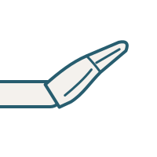
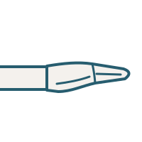
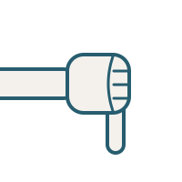
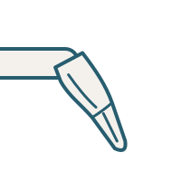

Rechte Hand aus Sicht des Gegenübers. Bitte jedes Zeichen auf Form und Ausrichtung prüfen.
dogeschlossene Faust, Daumen liegt quer über den Fingern.

reflache Hand, schräg nach oben geneigt, Handfläche zeigt nach unten.

miflache Hand waagerecht, Handfläche zeigt nach unten.

faFaust, der Daumen zeigt nach unten.soflache Hand senkrecht, Handfläche zum Körper; zu sehen ist der Handrücken, die Finger zeigen zur Seite, der Daumen nach oben.

laHand hängt locker vom Handgelenk herab, Handfläche zeigt nach unten, Finger zeigen zum Boden.tiFaust, der Zeigefinger zeigt schräg nach oben.
Höhenleiter
Die Höhe der Hand gehört zum Zeichen (do etwa Bauchhöhe, do' etwa Stirnhöhe; tiefe Oktave unterhalb des Bauchs).